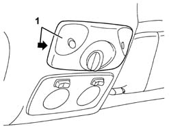
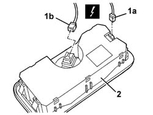

5580E22 Anti-theft device VOLUMETRIC SENSORS - R.R. after checking electrical circuit
- Path
- Procedures > 55 ELECTRICAL EQUIPMENT > 5580 SPECIAL ACCESSORIES > 5580E anti-theft device > 5580E22 Anti-theft device VOLUMETRIC SENSORS - R.R. after checking electrical circuit
- Kind
- repair procedure (removal / refitting; the operation number is the code)
- Applies to
- all engines; all production periods
- Interactive page
- https://sloeber94.github.io/elrnDB-a147/en/#/3025621
Applies to: all engines; all production periods
 Removing
Removing
 Refitting
Refitting1. Remove the volumetric sensors unit. Work on the side shown in the diagram.

Applies to: all engines; all production periods
1. Disconnect electrical connections (1a), (1b).
 | Name | Connector |
|---|---|---|
1a | Alarm volumetric sensors assembly |
2. Recover the volumetric sensors.

Applies to: all engines; all production periods
Refitting
RemovingCheck that the volumetric sensors unit is not damaged.
Connect the electrical connection.
Fit the volumetric sensors in the housing.
Connect the battery.
Check the operation of the system using the Examiner or the other diagnostic equipment.
Topics linked from this page (1)
Topics that link to this page (13)
- A25 ALARM VOLUMETRIC SURVEILLANCE NOT WORKING
- 5505C41 cabin wiring - r r
- 5580C50 (HEAD- BAG MODULE ) (one), left or right - R.R.
- 7030B12 sliding roof (assembly) - r+r
- 7030B40 drainage channel - r r
- 7030B50 sun roof guide , one , lh or rh - r r
- 7030B54 sun roof systems
- 7030B64 sun-roof control switch - r+r
- 7030B70 sun-roof control switch - r+r
- 7035A14 (Bonded type) windscreen GLASS - R.R. - Includes. cleaning edges of glass and housing in bodyshell
- 7035A18 windscreen glass r r including cleaning of housing
- 7040H10 roof panel lining - r r
- 7040H16 roof panel lining - r r